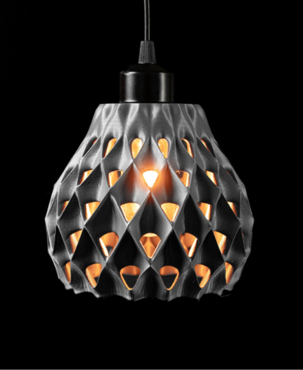

Interactive Bézier sculpting
Drag the profile's curve handles and radius endpoints in the 2D editor to shape organic silhouettes, hour-glasses, or flared curves.

Procedural sinusoidal ribs
Generate harmonic sinusoidal wave ribs with adjustable rib count (3–80), depth (0–25mm), and helical twist up to 360°.

Cellular Voronoi openings (CSG)
Generate seamless 360-degree cylindrical Delaunay tessellation with solid boolean cuts and configurable perimeter safety rims.

Pleated architectural fins
Crisp folded fins and sharp architectural fluting casting dramatic directional light and radial wall shadows.

Socket and mount fittings
Select supported E27/E26 standard (41mm), E14 European (29mm), pendant cord grip (10mm), or open-tube fittings with reinforcing spokes.

Origami knurl & diamond lattice
Multi-faceted diamond knurling scattering light prismatically, engineered with overhang angles that print cleanly without supports.
